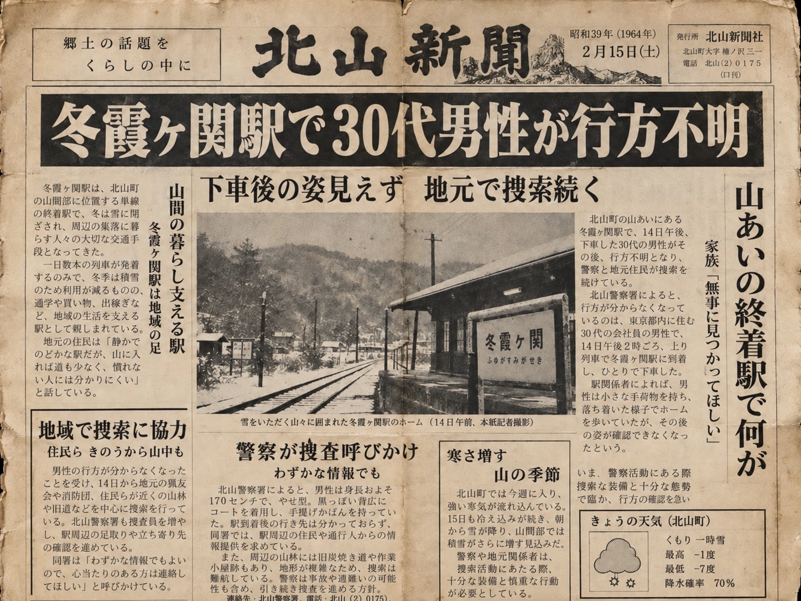
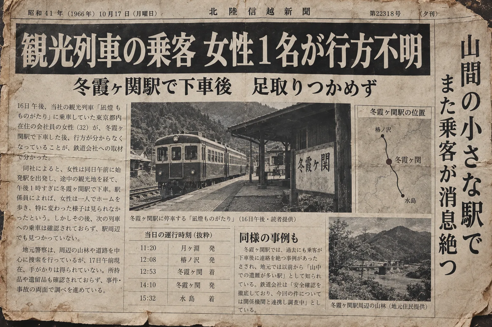
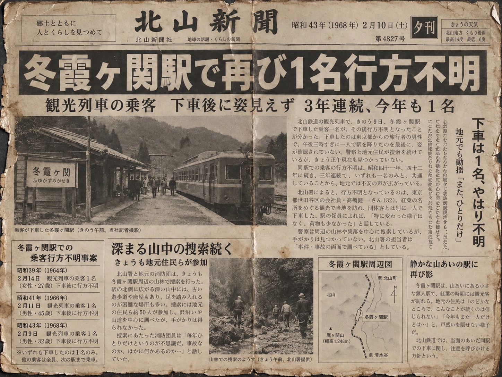
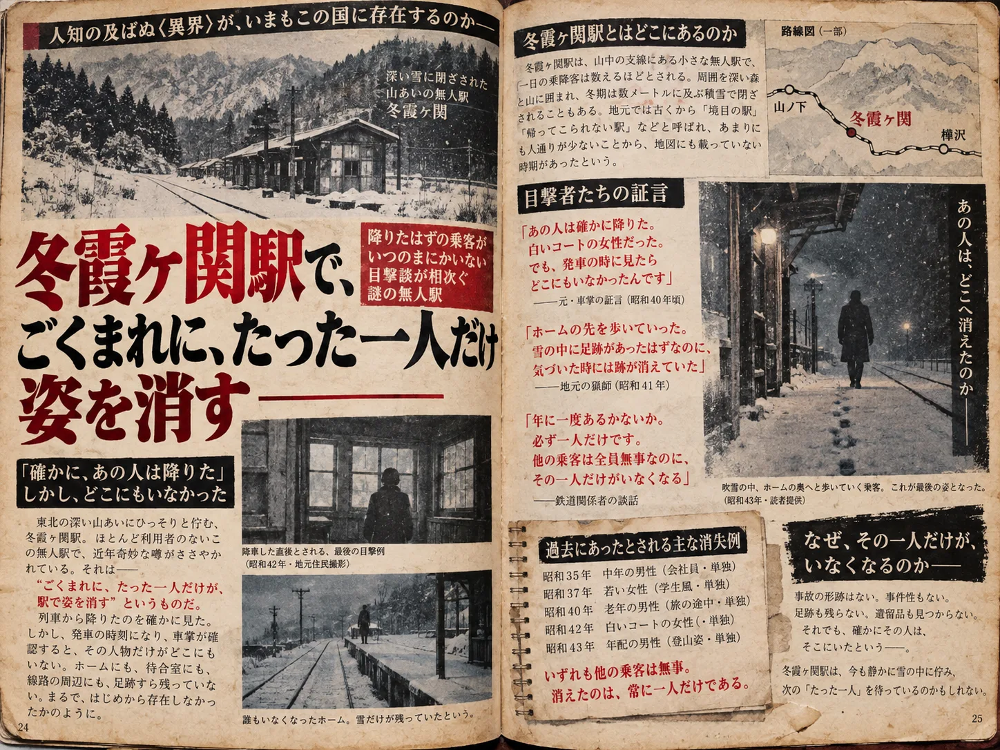
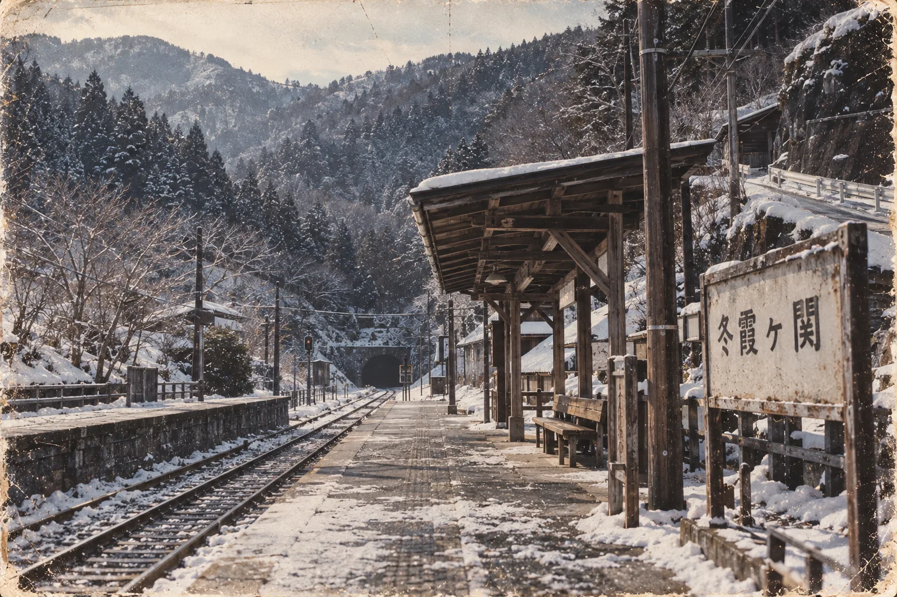
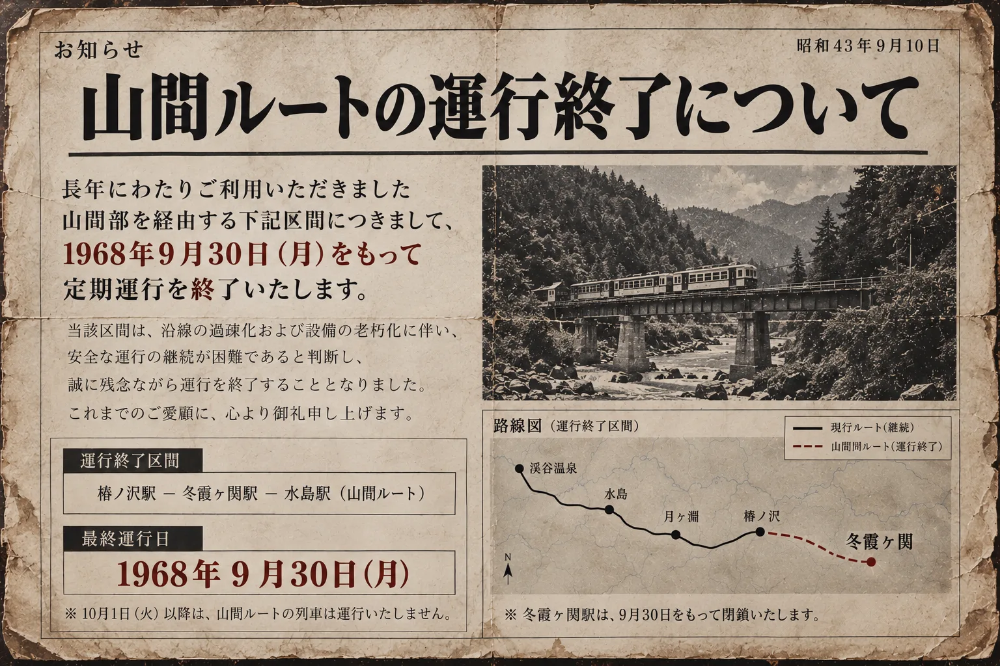

冬霞ヶ関駅付近で男性が行方不明
冬霞ヶ関駅で降車した30代男性1名が行方不明。
当日は複数の利用者が冬霞ヶ関駅を利用していたが、所在が確認できなくなったのは男性1名のみ。
周辺の山林を含む捜索が行われたが、男性の所在は確認されなかった。
ARCHIVE / 1964–1968
新聞記事、雑誌、駅写真、運行資料の年代別保管記録。

冬霞ヶ関駅で降車した30代男性1名が行方不明。
当日は複数の利用者が冬霞ヶ関駅を利用していたが、所在が確認できなくなったのは男性1名のみ。
周辺の山林を含む捜索が行われたが、男性の所在は確認されなかった。

冬霞ヶ関駅で降車した女性1名が行方不明。
当日も複数の利用者が確認されていたが、消息を絶ったのは女性1名のみ。
周辺捜索が行われたものの、所在を示す痕跡は確認されなかった。

冬霞ヶ関駅の利用者から、再び1名の行方不明者が発生。
当日の利用者は複数名。
過去の事例との共通点が確認され、冬霞ヶ関駅および山間ルートについて運行上の再検討が開始された。

一連の事例は、当時の雑誌でも取り上げられている。
記事では、「冬霞ヶ関駅では、ごくまれに、利用者の中から1人だけが姿を消す」という噂が紹介された。
当時の資料では、発生原因および再現条件は特定されていない。

駅名標およびホームの保管写真。冬霞ヶ関駅が山間ルート上の正式停車駅として使用されていた事実を確認。

山間ルート 定期運行終了
冬霞ヶ関駅 閉鎖